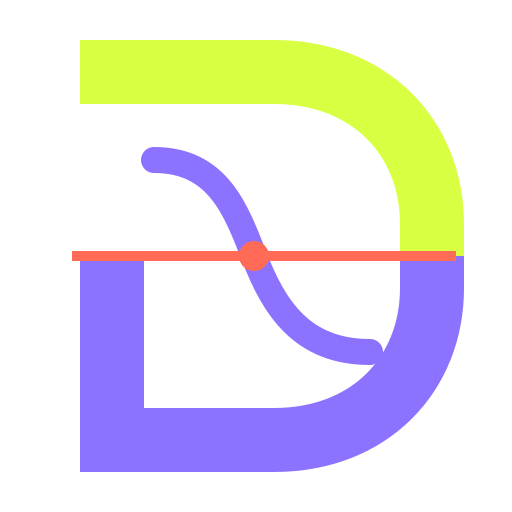

Base value · computed onchain
0
violation count ≤ 0
Claim stands

DISSENT COUNTEREXAMPLE BOUNTIESA market for falsifying deterministic agent rules
Fund a deterministic rule. A challenger seals a counterexample. Monad reruns the committed policy and pays when the boundary breaks. The recorded case uses poker; DissentCore does not.
Dissent recomputed the violation onchain, refuted the rule and released the bounty. Replay the completed challenge below.
Monad's execution budget lets the deterministic recomputation and settlement happen onchain, while the bounty, result and payout stay publicly inspectable. This is a working testnet settlement, not a claim of external adoption or a mainnet launch.
First live case · Alnitak's river policy
Base value · computed onchain
0
violation count ≤ 0
Evidence seal · hidden scenario
SEALED
Hidden until the reveal window
The challenger commits a hash of the evidence and locks a deposit. The scenario remains hidden until reveal.
This replays a completed testnet case. Verify its receipts at the end.What just happened
Alnitak's old rule said call. Under the stronger opponent model
already specified by the recomputer, that call fell below the promised
safety margin.
The recomputer returned violation 1 against the allowed maximum
0. Dissent credited the 3.00 test MON bounty plus the returned
0.10 test MON deposit. The challenger then withdrew the full 3.10 test MON credit.
This tests a specific historical v1 rule, not all of Alnitak. The policy was developed after observing part of the history; prospective validation and external audit remain pending. The four replay transactions cost 2.460526921375119108 test MON in gas; a 3.1 MON credit is not a 3.1 MON net profit.
Reading Monad Testnet
Four receipts, the success event, the withdrawal and the final contract state are being checked.
The full sequence includes the commitment, evidence seal, successful reveal and challenger withdrawal.
Zero means the initial policy input contains no counterexample; it is not a probability or a claim that the agent is universally safe. For this historical hand, the exact old-model equity was 56.8942%, above the required 42.4170%, so the old gate would allow the call. Under the pressure model specified by this adapter, exact equity was 32.0046%: below that same required margin. The adapter therefore returns 1. These are model-based numbers, not proof of the opponent's actual cards. No LLM judges the submitted evidence.
The protocol, not the poker
DissentCore binds a rule, a threshold and a reward. It does not know cards, risk models or prices. Meaning lives in a bounded, deterministic recomputer registered with the policy.
Poker is the completed case. Risk scores, prices and spending limits are possible domains, not integrations we have validated.
This demonstrates domain-independent architecture, not cross-domain adoption. No independent team has integrated Dissent yet.
Monad is built to expand what the EVM can execute. Dissent uses that execution headroom to rerun a bounded policy and settle its bounty in one public onchain flow.
On testnet, the complete path is recorded: commit, sealed evidence, deterministic recomputation and withdrawal.
Bind the rule and fund the reward.
Hide the counterexample until reveal.
Run the registered policy onchain.
Move the bounty when the boundary breaks.
Where Dissent fits
The agent publishes a precise output and boundary.
A bounded deterministic program can test the evidence.
The protected value exceeds the cost of finding and proving the break.
Dissent does not judge intentions or open-ended language. Demand from independent users is not yet established.
Trust boundary
Dissent is not an oracle of truth. The registry fixes the approved recomputer, its code hash, deposit and execution bounds. That prevents silent code replacement; it does not prove the domain rule is correct. The testnet recomputer has not undergone an external audit.